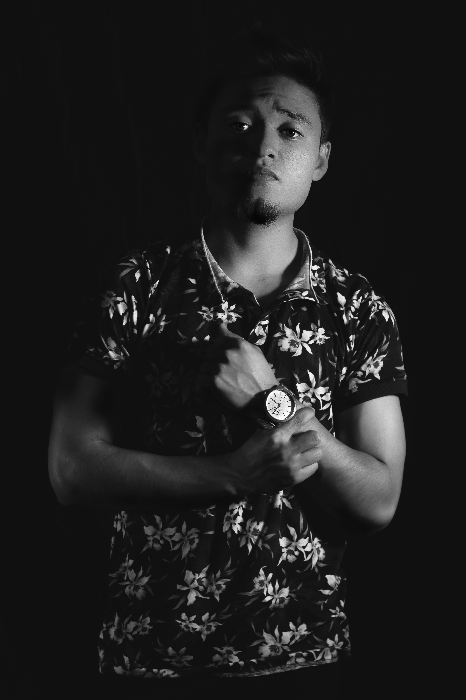

Curriculum Armando Cruz López

Nombre: Cruz López Armando.
Edad: 20 años. Sexo: Másculino.
Nacionalidad: Méxicana.
Área de desempeño: Audiovisual, fotografía e Ilustración.
Escolaridad: Universidad.
Trabaje como fotógrafo para funciones de boxeo prefesionales del Estado de México y Ciudad de México.
He realizado multiple sesiones fotográficas de retrato y fotográfia de moda.
Escolaridad terminada: Media Superior en la ENP 7.
Escolaridad que cursa: Superior en la FAD Xochimilco
Curso: Adobe Premiere: Post Producción desde cero 2017.
Curso: Fotografía desde cero: Viaja y captura el mundo 2018.
Curso: Branding para redes 2018. Curso: Mexico conectado 2019.
Adobe Premier Pro 85%
Adobe After Effects 70%
Adobe Illustrator 50%
Adobe Photoshop 80%
Adobe Indesign 50%
Adobe Lightroom Classic 75%
Adobe Audition 50%